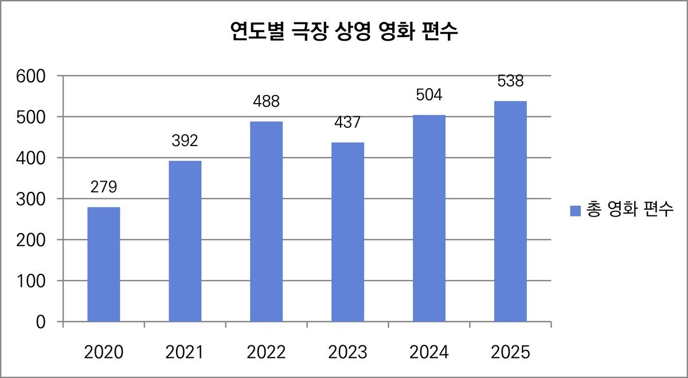
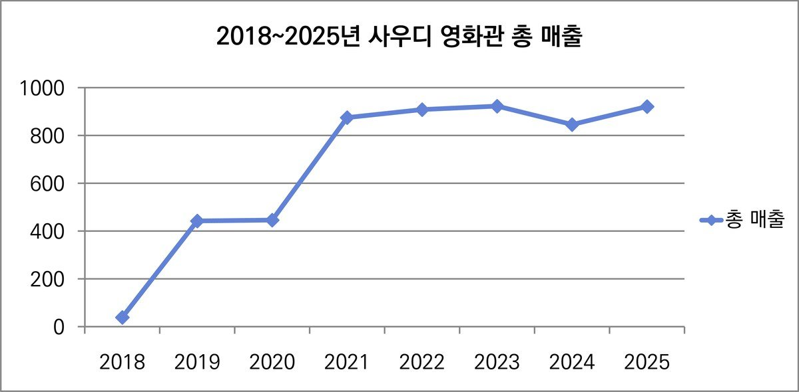
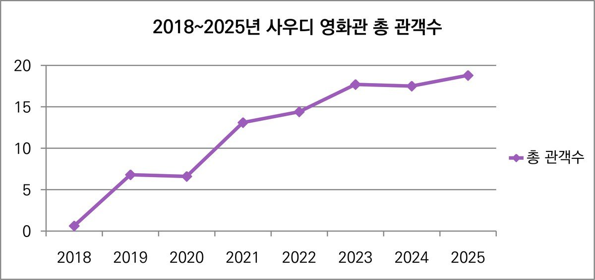
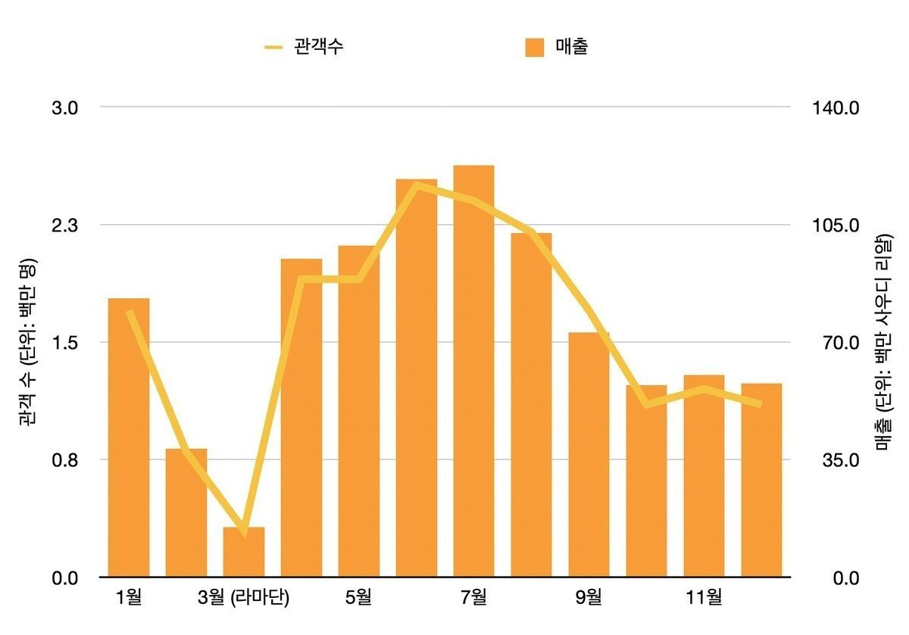
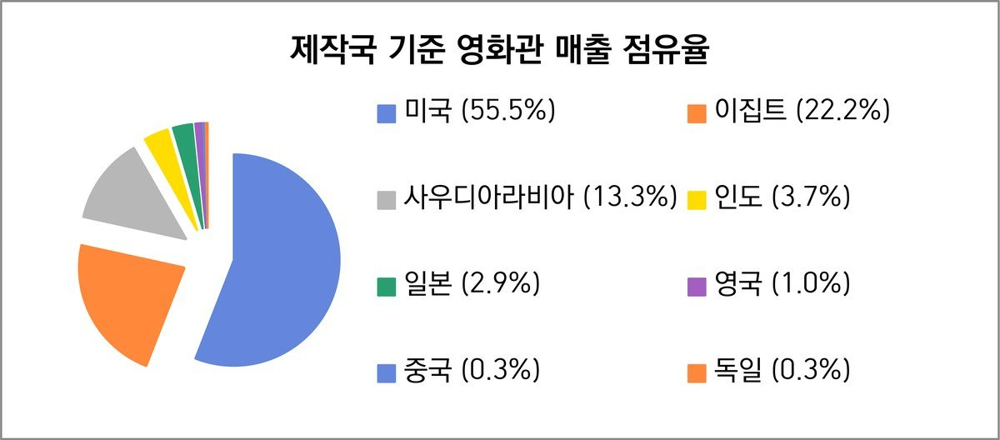
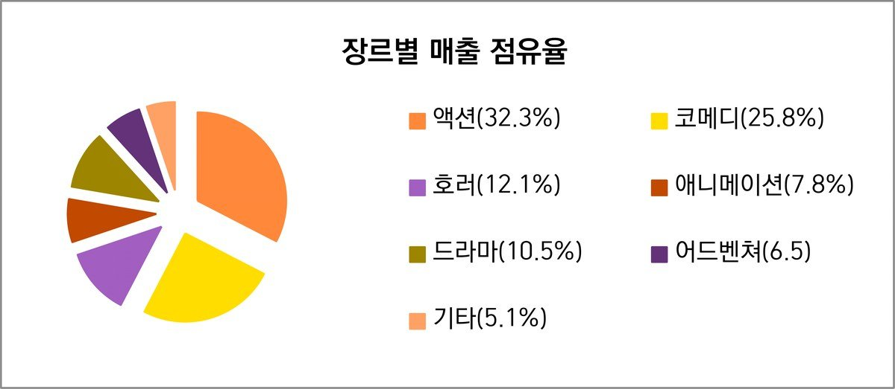

1. 2025년 영화산업 개요
사우디 영화산업은 2016년 '비전 2030(Vision 2030)' 이후 국가 전략 산업으로 육성되기 시작했으며, 2018년 극장 상영 재개를 계기로 본격적인 시장 확대가 이루어졌다. 2025년 사우디 박스오피스 매출은 약 9억 2080만 사우디 리얄(약 3315억 원), 총 관객 수는 약 1880만 명을 기록하며 극장 재개 이후 최고 수준을 나타냈다. 또한 사우디는 최근 세계 박스오피스 시장 상위 15위권에 진입하며 중동 지역 핵심 영화 소비 시장으로 성장하고 있다.

▲ 그림 1. 2020~2025년 사우디 극장 상영 영화 편수 추이 — 출처: 사우디 필름 커미션, 필자 재구성
2020년 이후 사우디 극장 상영 영화 편수는 전반적인 증가 흐름을 보이고 있다. 2020년 279편이었던 상영 영화 수는 2022년 488편까지 확대되었으며, 2023년에는 437편으로 일시적 감소를 나타냈으나 이후 다시 증가세로 전환되었다. 2024년에는 504편, 2025년에는 538편을 기록하며 상영 영화 공급 규모가 지속적으로 확대되고 있다. 이러한 성장세는 정부의 문화산업 육성 정책과 극장 인프라 확대, 해외 영화 유입 증가 등이 복합적으로 작용한 결과로 분석된다.

▲ 그림 2. 2018~2025년 사우디 영화관 매출 추이 (단위: 백만 사우디 리얄) — 출처: 사우디 필름 커미션, 필자 재구성

▲ 그림 3. 2018~2025년 사우디 영화관 총 관객 수 추이 (단위: 백만 명) — 출처: 사우디 필름 커미션, 필자 재구성
영화산업이 공식적으로 개방되기 시작한 2018년부터 2025년까지의 사우디 박스오피스 매출 및 관객 수 추이를 살펴보면, 2018년 극장 상영 재개 이후 사우디 영화 시장은 빠르게 성장했으며 2020년 코로나19 영향으로 일시적 둔화를 겪은 뒤 2021년 이후 다시 회복세를 나타냈다. 이후 시장은 안정적인 성장 흐름을 유지하며 2025년 역대 최고 수준의 매출과 관객 수를 기록했다.
현재 시장은 미국 영화 중심 구조가 강하게 유지되고 있으며, 이집트와 인도 영화 역시 주요 비중을 차지하고 있다. 반면 사우디 자국 영화는 개봉 편수 기준으로는 제한적이지만, 일부 흥행작을 중심으로 점진적인 성장세를 보이고 있다. 장르별로는 액션과 코미디 중심 상업영화 소비 비중이 높은 편이다.
사우디 영화산업은 정부 주도의 정책 지원과 민간 투자 확대가 결합된 구조를 특징으로 한다. 사우디 필름 커미션(Saudi Film Commission)을 중심으로 제작 지원과 인력 양성, 국제 협력 확대 등이 추진되고 있으며, 최근에는 제작 기반 산업으로의 전환도 함께 시도되고 있다.
2. 극장 산업 구조 및 흥행 시장 분석
사우디아라비아 극장 산업은 상영 사업자 간 경쟁 구조와 빠른 인프라 확장을 바탕으로 시장 성장을 견인하고 있다. 2025년 기준 사우디 전역 10개 지역에 총 62개 극장과 603개 스크린이 운영되고 있으며, 극장과 스크린 수는 지속적으로 증가하며 관객 접근성이 크게 개선되었다. 영화 소비는 리야드를 중심으로 한 대도시에 집중되는 구조를 보이며, 지역 간 격차가 존재하는 특징을 나타낸다.
한편, 프리미엄 상영관 확대는 극장 산업의 수익 구조 변화에도 영향을 미치고 있다. 특히 아이맥스(IMAX), 4DX, VIP 상영관 등 프리미엄 상영 서비스 확대와 함께 관람 경험 중심 소비가 강화되고 있다. 더불어 계절과 종교 행사에 따라 월별 흥행 흐름 역시 뚜렷한 변동성을 보이고 있다.
1) 주요 상영 사업자와 극장 소비 구조
사우디 영화관은 정부의 허가 및 규제 체계 하에서 운영되며, 복수의 사업자가 시장에 진입하는 형태를 보이고 있다. 주요 사업자로는 아랍에미리트 기반의 중동 최대 체인 복스 시네마스(VOX Cinemas), 사우디 현지 기업인 무비 시네마스(muvi Cinemas), 그리고 미국계 글로벌 체인인 에이엠씨 시네마스(AMC Cinemas) 등이 있다. 특히 무비 시네마스는 200개 이상의 스크린을 운영하며 가장 큰 규모를 형성하고 있으며, 복스 시네마스 역시 100개 이상의 스크린을 기반으로 주요 도시에서 확장하고 있다. 이 외에도 레바논 기반의 엠파이어 시네마스(Empire Cinemas)와 그랜드 시네마스(Grand Cinemas), 아랍에미리트의 릴 시네마스(Reel Cinemas) 등 중동 지역 사업자들이 함께 참여하며 경쟁 구도를 이루고 있다.
영화 유통 측면에서는 워너 브라더스(Warner Bros.), 디즈니(Disney), 파라마운트(Paramount) 등 할리우드 메이저 스튜디오의 글로벌 배급망 영향력이 크게 나타나고 있다. 사우디 로컬 영화 유통에서는 카나와트 그룹(Qanawat Group) 등 현지 배급사의 역할도 확대되고 있다.
사우디 영화관은 대부분 대형 쇼핑몰 내 복합문화공간 형태로 운영되고 있다. 영화관 주변에는 쇼핑 시설과 레스토랑, 카페, 대형마트, 볼링장, 아케이드 게임존 등 다양한 실내 여가시설이 함께 조성되어 있어 영화 관람은 가족·친구 단위의 복합 여가 활동과 함께 이루어지는 경향이 나타난다. 더불어 야간 중심 라이프스타일 영향으로 늦은 시간대 영화 관람 수요 역시 비교적 높은 편이다.
요일별 평균 티켓 가격은 월요일이 약 41.4 사우디 리얄(약 1만 5천 원)로 가장 낮은 수준을 보이며 주말로 갈수록 가격이 상승하는 경향이 나타난다. 특히 토요일은 약 52.1 리얄(약 1만 9천 원)로 가장 높은 수준을 기록하며, 주말 수요 증가가 가격에 반영된 것으로 보인다. 프리미엄 상영은 약 75 리얄(약 2만 7천 원), 리클라이너 좌석(Lounger)은 약 80 리얄(약 2만 9천 원) 수준으로 운영되고 있으며, 무비 시네마스의 럭셔리 스위트(Luxury Suites) 좌석은 약 185 리얄(약 6만 7천 원)에 이른다.
2) 지역 분포 및 매출
| 지역 | 매출액 | 관객 수 | 인구 수 |
|---|---|---|---|
| 리야드(Riyadh) | 4억 3440만 (약 1,600억 원) | 800만 | 약 760만 |
| 메카(Mecca) | 2억 4190만 (약 870억 원) | 520만 | 약 880만 |
| 동부지역(Eastern Province) | 1억 4340만 (약 520억 원) | 320만 | 약 520만 |
| 알 카심(Al Qassim) | 2250만 (약 81억 원) | 54만 | 약 150만 |
| 메디나(Madinah) | 2400만 (약 86억 원) | 55만 | 약 220만 |
| 아시르(Aseer) | 2340만 (약 84억 원) | 51만 | 약 230만 |
| 타북(Tabuk) | 970만 (약 35억 원) | 28만 | 약 100만 |
| 헤일(Hail) | 790만 (약 28억 원) | 24만 | 약 70만 |
| 자잔(Jazan) | 1160만 (약 42억 원) | 27만 | 약 170만 |
| 북부지역(Northern Borders) | 220만 (약 8억 원) | 6만 | 약 40만 |
* 매출액: 1사우디 리얄 ≈ 360원 기준 환산. 인구 수: Worldometer 통계자료 참고. 출처: 사우디 필름 커미션, 필자 재구성
지역별 매출과 관객 분포를 종합적으로 살펴보면, 영화 소비는 수도 리야드를 중심으로 한 대도시 집중 구조가 뚜렷하게 나타난다. 리야드는 전체 박스오피스 매출의 약 47%를 차지하며 시장을 주도하고 있으며, 메카(약 26%), 동부지역(약 15%)이 그 뒤를 잇는 구조를 보인다. 특히 상위 3개 지역이 전체 매출의 약 80% 이상을 차지하고 있어, 영화 소비가 특정 지역에 집중되는 경향이 강한 것으로 분석된다. 이 통계는 행정구역 단위로 집계되기 때문에 제다(Jeddah)와 같은 대도시의 영화 소비는 메카 지역에 함께 반영되었다.

▲ 그림 4. 2025년 월별 영화 매출 및 관객 수 추이 — 출처: 사우디 필름 커미션, 필자 재구성
2025년 월별 영화 매출을 보면, 7월 약 1억 2250만 사우디 리얄(약 440억 원)로 연중 최고치를 기록했고, 3월은 약 1490만 사우디 리얄(약 54억 원)로 가장 낮은 수준을 보였다. 전반적으로 여름철에 매출이 높고, 봄에는 낮은 흐름이 나타났다. 여름철에는 기온 상승으로 야외 활동이 줄고 실내 중심의 여가 활동이 늘어나면서 영화관 이용이 자연스럽게 증가하는 경향이 있다.
반면 라마단(Ramadan) 기간이 포함된 3월에는 영화 관람 수요가 크게 줄어든다. 낮 동안 금식으로 외출이 감소하고, 저녁에는 이프타르(Iftar, 일몰 후 금식을 마치고 하는 식사)를 중심으로 가족 중심의 활동이 늘어나기 때문이다. 이 시기에는 종교적 분위기도 강해지면서 오락 소비 자체가 전반적으로 줄어드는 경향이 있다.
3. 2025년 주요 흥행작 분석
1) 전체 상위 10위 흥행작 구성 분석
| 순위 | 작품명 | 국가 | 상영 기간 | 매출액 | 관객 수 |
|---|---|---|---|---|---|
| 1 | F1 더 무비 | 미국 | 19주 | 3910만 리얄 (약 140억 원) | 65만 명 |
| 2 | 릴로 & 스티치 | 미국 | 27주 | 3680만 리얄 (약 132억 원) | 85만 명 |
| 3 | 알 자르파 | 사우디 | 24주 | 3070만 리얄 (약 111억 원) | 73만 명 |
| 4 | 엘 셀렘 와 엘 토반 | 이집트 | 7주 | 2990만 리얄 (약 108억 원) | 54만 명 |
| 5 | 샤밥 엘 봄 2 | 사우디 | 17주 | 2720만 리얄 (약 98억 원) | 60만 명 |
| 6 | 호발 | 사우디 | 16주 | 2460만 리얄 (약 89억 원) | 58만 명 |
| 7 | 미션 임파서블: 파이널 레코닝 | 미국 | 11주 | 2200만 리얄 (약 79억 원) | 37만 명 |
| 8 | 리스타트 | 이집트 | 8주 | 2080만 리얄 (약 75억 원) | 41만 명 |
| 9 | 귀멸의 칼날 | 일본 | 13주 | 2050만 리얄 (약 74억 원) | 40만 명 |
| 10 | 데인저러스 애니멀스 | 미국 | 15주 | 2020만 리얄 (약 73억 원) | 44만 명 |
* 환율: 1사우디 리얄 ≈ 360원 기준 환산. 출처: 사우디 필름 커미션, 필자 재구성
2025년 사우디아라비아 박스오피스 상위 10위 흥행작을 살펴보면, 미국 영화가 높은 비중을 차지하며 시장을 주도하는 구조가 나타난다. 특히 <F1 더 무비>, <릴로 & 스티치>, <미션 임파서블: 파이널 레코닝>, <데인저러스 애니멀스> 등 할리우드 작품이 다수 포함되어 있다.
한편, 사우디 자국 영화 역시 상위권에 다수 진입하며 점진적인 성장세를 보이고 있다. <알 자르파>, <샤밥 엘 봄 2>, <호발>은 비교적 긴 상영 기간을 유지하며 안정적인 관객 수를 확보한 것으로 나타난다. 특히 이들 작품은 16주 이상 상영되며 일정 수준 이상의 관객 동원을 지속하고 있어, 자국 콘텐츠에 대한 관객 수요가 점차 확대되고 있는 흐름으로 해석할 수 있다.
이집트 영화 또한 상위 10위 내에 포함되며 아랍권 콘텐츠의 영향력을 보여준다. 또한 일본 애니메이션 <귀멸의 칼날>이 포함된 점은 사우디 영화 시장이 다양한 국가의 콘텐츠를 수용하는 다층적인 소비 구조를 형성하고 있음을 시사한다.

▲ 그림 5. 2025년 사우디아라비아 영화 제작국 기준 영화관 매출 점유율 — 출처: 사우디 필름 커미션, 필자 재구성
2025년 사우디아라비아 박스오피스 매출 점유율을 제작국 기준으로 살펴보면, 미국이 55.5%로 과반의 비중을 차지하며 시장을 주도하고 있다. 이어 이집트가 22.2%로 두 번째로 높은 비중을 차지하고 있으며, 사우디아라비아는 13.3%의 점유율을 기록하며 자국 영화의 존재감을 일정 수준 유지하고 있다. 인도(3.7%), 일본(2.9%), 영국(1.0%) 등 기타 국가 영화는 상대적으로 낮은 점유율을 보였다.
특히 한국 영화는 2025년 제작국 기준 주요 점유율 국가에는 포함되지 못한 것으로 나타났다. 이는 한국 콘텐츠가 사우디 시장에서 OTT를 중심으로 인지도를 확대하고 있으나, 극장 상업영화 시장 내 영향력은 아직 제한적인 수준에 머물러 있음을 보여준다.
| 순위 | 국가 | 영화 편수 |
|---|---|---|
| 1 | 미국 | 213편 |
| 2 | 인도 | 130편 |
| 3 | 이집트 | 40편 |
| 4 | 영국 | 30편 |
| 5 | 일본 | 12편 |
| 6 | 사우디아라비아 | 11편 |
| 7 | 독일 | 9편 |
| 8 | 중국 | 8편 |
* 출처: 사우디 필름 커미션, 필자 재구성
국가별 영화 상영 편수를 보면 미국이 213편으로 가장 높은 비중을 차지하고 있으며, 이어 인도 130편, 이집트 40편 순으로 나타난다. 반면 인도 영화는 많은 편수가 개봉되고 있음에도 매출 점유율은 3.7%에 그쳐, 사우디 내 남아시아 노동 인구를 중심으로 한 특정 관객층 소비가 반영된 제한적인 시장 구조를 보인다. 사우디 자국 영화는 11편으로 상영 편수는 많지 않지만, 매출 점유율은 13.3%를 기록하며 상대적으로 높은 시장 영향력을 나타냈다.
2) 장르 및 관람 등급별 흥행 구조

▲ 그림 6. 2025년 사우디 영화 장르별 매출 점유율 — 출처: 사우디 필름 커미션, 필자 재구성
| 장르 | 매출 (백만 리얄) | 상영 편수 | 주요 흥행작 |
|---|---|---|---|
| 액션 | 2억 9780만 (약 1072억 원) | 136편 | F1 더 무비 |
| 코미디 | 2억 3770만 (약 856억 원) | 73편 | 알 자르파 |
| 공포 | 1억 1140만 (약 401억 원) | 74편 | 데인저러스 애니멀스 |
| 드라마 | 9630만 (약 347억 원) | 99편 | 호발 |
| 애니메이션 | 7140만 (약 257억 원) | 63편 | 귀멸의 칼날 |
| 어드벤처 | 5940만 (약 214억 원) | 17편 | 릴로 & 스티치 |
| 기타 | 4680만 (약 168억 원) | 76편 | 나우 유 씨 미: 나우 유 돈트 |
* 출처: 사우디 필름 커미션, 필자 재구성
2025년 영화 장르별 매출 점유율을 살펴보면, 액션 장르가 32.3%로 가장 높은 비중을 차지하며 시장을 주도했다. 코미디 장르는 25.8%로 두 번째로 높은 비중을 기록했으며, <알 자르파>와 같은 사우디 자국 영화의 흥행이 주요 요인으로 작용했다. 드라마 장르는 99편으로 많은 상영 편수를 기록했으나, 매출 점유율은 10.5%에 머물렀다. 반면 어드벤처 장르는 17편으로 상영 편수는 적었으나 6.5%의 매출 점유율을 기록하며 비교적 높은 수익성을 나타냈다.
| 관람 등급 | 등급 설명 | 매출 비중 | 관객 수 | 상영 편수 |
|---|---|---|---|---|
| G | 전체 관람가 | 0.02% | 6천 명 | 4편 |
| PG | 보호자 지도 권장 | 10.5% | 230만 명 | 61편 |
| PG12 | 12세 미만 보호자 지도 필요 | 10.2% | 210만 명 | 22편 |
| PG15 | 15세 미만 보호자 지도 필요 | 13.4% | 250만 명 | 55편 |
| R15 | 15세 미만 관람 불가 | 20.4% | 360만 명 | 104편 |
| R18 | 18세 미만 관람 불가 | 45.4% | 830만 명 | 292편 |
* 출처: 사우디 필름 커미션, 필자 재구성
관람 등급별 흥행 구조를 살펴보면, 18세 미만 관람 불가(R18) 등급 영화가 전체 매출의 45.4%를 차지하며 가장 높은 비중을 기록했다. 이어 15세 미만 관람 불가(R15) 등급이 20.4%, 15세 미만 보호자 지도 필요(PG15) 등급이 13.4%를 기록하며 성인 및 청소년 이상 관객 중심의 소비 구조가 뚜렷하게 나타났다. 반면 전체 관람가(G) 영화의 비중은 0.02% 수준에 머물렀다.
3) 사우디 자국 영화의 성과
| 순위 | 작품명 | 상영 기간 | 장르 | 매출 | 관객 수 |
|---|---|---|---|---|---|
| 1 | 알 자르파 | 24주 | 코미디 | 3070만 리얄 (약 111억 원) | 73만 명 |
| 2 | 샤밥 엘 봄 2 | 17주 | 코미디 | 2720만 리얄 (약 98억 원) | 60만 명 |
| 3 | 호발 | 16주 | 드라마 | 2460만 리얄 (약 89억 원) | 58만 명 |
| 4 | 에사프 | 14주 | 코미디/액션 | 1870만 리얄 (약 67억 원) | 38만 명 |
| 5 | 시와르 | 12주 | 드라마 | 1090만 리얄 (약 39억 원) | 25만 명 |
| 6 | 파크르 알 수와이디 | 14주 | 코미디 | 680만 리얄 (약 24억 원) | 15만 명 |
| 7 | 라일 나하르 | 9주 | 코미디 | 390만 리얄 (약 14억 원) | 8만 명 |
| 8 | 알 가이드 | 5주 | 스릴러/어드벤처 | 210만 리얄 (약 8억 원) | 6만 명 |
| 9 | 사이피 | 4주 | 다크 코미디 | 32만 리얄 (약 1억 1천만 원) | 8천 명 |
| 10 | 카슈무 | 2주 | 코미디 | 28만 리얄 (약 1억 원 미만) | 6천 명 |
* 환율: 1사우디 리얄 ≈ 360원 기준 환산. 출처: 사우디 필름 커미션, 필자 재구성
2025년 사우디 자국 영화 상위 10위 흥행작을 살펴보면, 일부 흥행작에 매출과 관객이 집중되는 구조가 뚜렷하게 나타났다. 특히 <알 자르파>는 약 3070만 리얄(약 111억 원)의 매출과 73만 명의 관객을 기록하며 가장 높은 흥행 성과를 거두었다. 이들 작품은 앞서 살펴본 전체 흥행작 상위 10위에도 포함되어 있으며, 할리우드 및 기타 국가 영화와의 경쟁 속에서도 의미 있는 성과를 거둔 사례로 평가된다.
전반적으로 2025년 사우디 자국 영화 시장은 코미디 장르 중심의 제작 구조가 두드러졌다. 상위 10위 작품 가운데 절반 이상이 코미디 또는 코미디 기반 장르로 구성되어 있으며, 이는 가족 단위 관람과 대중적 오락 콘텐츠 선호가 강한 사우디 극장 시장 특성과 맞닿아 있다. 사우디 자국 영화는 제한적인 제작 편수에도 불구하고 일부 흥행작을 중심으로 시장 내 영향력을 확대하며 로컬 콘텐츠의 상업적 가능성을 입증했다.
4. 극장 외 흥행 (OTT·유료 TV·부가 시장)
사우디아라비아에서는 극장 산업 성장과 함께 OTT 중심의 영상 콘텐츠 소비 역시 빠르게 확대되고 있다. 높은 인터넷 보급률과 스마트폰 사용률, 젊은 인구 구조를 바탕으로 스트리밍 서비스 이용이 증가하면서 영화 소비 방식 역시 변화하고 있다.
현재 사우디 OTT 시장은 넷플릭스(Netflix), 디즈니플러스(Disney+), 아마존 프라임 비디오(Amazon Prime Video)와 같은 글로벌 플랫폼과 샤히드(Shahid), 스타즈플레이(Starzplay) 등 중동 지역 플랫폼이 경쟁 구도를 형성하고 있다.
옴디아(Omdia)에 따르면 2025년 중동·북아프리카(MENA) 온라인 동영상 시장 규모는 약 15억 달러에 이를 것으로 전망되며, 구독형 OTT 가입자 수 역시 2700만 명을 넘어설 것으로 예상된다. 특히 중동 주요 미디어 그룹 MBC 산하 OTT 플랫폼인 샤히드는 약 440만 명의 가입자를 확보하며 지역 대표 OTT 플랫폼 가운데 하나로 자리 잡고 있다.
극장에서는 할리우드 블록버스터와 프리미엄 상영 중심 소비가 이루어지는 반면, OTT에서는 중소규모 영화와 장르 영화, 시리즈 콘텐츠 소비가 활발하게 이루어지고 있다. 과거 위성방송과 DVD 중심이었던 영화 부가 시장은 최근 IPTV·VOD·모바일 스트리밍 중심으로 빠르게 재편되고 있으며, 온라인 플랫폼을 통한 영화 소비 비중도 꾸준히 증가하는 추세다.
한국 영화가 아직 사우디 극장 시장에서 큰 비중을 차지하지 못하는 것과 달리 OTT 환경에서는 점차 소비가 확대되고 있다. 특히 넷플릭스를 중심으로 한국 영화가 꾸준히 공개되면서 사우디 관객과의 접점도 늘어나고 있다. 실제로 2025년 넷플릭스 사우디아라비아 주간 순위에서는 한국 영화가 영화 부문 상위 10위권에 반복적으로 진입하는 사례가 나타났다. 샤히드에서도 일부 한국 콘텐츠가 아랍어 자막과 함께 제공되고 있으며, 현재는 드라마 중심 콘텐츠가 주로 제공되고 있지만 한국 콘텐츠 전반에 대한 인지도 확대는 향후 한국 영화 유통 확대에도 긍정적인 영향을 미칠 수 있다.
5. 정부지원 및 국제협력 현황
1) 정부 지원 및 제작 인프라 확대
사우디는 정부 지원과 대규모 문화 인프라 투자를 바탕으로 촬영 인프라와 제작 지원, 글로벌 협력 확대를 함께 추진하며 중동 지역의 새로운 콘텐츠 제작 거점으로 성장하고 있다. 촬영·후반작업·VFX·사운드 등 전문 인력은 여전히 해외 인력 의존도가 높은 편으로, 워크숍과 제작 지원 사업, 신인 영화인 육성 프로그램 등을 통해 자국 영화산업 기반 확대에 집중하고 있다.
사우디 정부는 해외 촬영 유치와 제작 인프라 확대에도 적극적으로 투자하고 있다. 대표적으로 네옴(NEOM)과 알울라(AlUla)는 국제 촬영지로 개발되며 해외 영화와 드라마 촬영 유치에 활용되고 있다. 이와 함께 사우디 필름 커미션은 자국 영화 제작 활성화를 위해 다우 필름 컴페티션(Daw' Film Competition)과 같은 제작 지원 프로그램도 운영하고 있다. 2025년 사우디 전체 박스오피스 흥행 순위 6위를 기록한 사우디 자국영화 <호발> 역시 해당 프로그램 선정작 가운데 하나로, 네옴의 촬영 인프라와 제작 지원을 기반으로 제작되었다.
또한 사막과 해안, 미래형 도시 환경 등 다양한 로케이션을 기반으로 글로벌 제작사들의 관심이 확대되고 있으며, 사우디 정부는 해외 제작 유치를 위해 최대 40% 수준의 현금 리베이트(cash rebate) 정책도 운영하고 있다.
사우디 대표 촬영 허브 가운데 하나로 성장하고 있는 필름 알울라(Film AlUla)는 촬영 허가 지원과 로케이션 제공, 제작 인센티브 등을 운영하며 국제 영화와 OTT 콘텐츠 제작 유치 확대에 나서고 있다. 리야드의 잭스 디스트릭트(JAX District)에는 사운드 스테이지와 버추얼 프로덕션 시설 등을 포함한 잭스 필름 스튜디오(Jax Film Studios)가 현재 조성되고 있으며, 리야드 인근 초대형 엔터테인먼트 도시인 키디야(Qiddiya)에서도 플레이메이커 스튜디오(PlayMaker Studios) 설립이 진행 중이다.
한편, 2025년에는 기존 상업영화 중심 구조 속에서 씨네하우스(Cinehouse)와 같은 아트하우스 상영 공간 확대가 이루어지는 등 상영 문화가 점차 다양화되고 있음을 시사하는 움직임도 나타났다.
2) 국제 영화제 및 해외 협력
사우디아라비아는 국제 영화제와 글로벌 콘텐츠 협력을 통해 영화산업의 국제 네트워크를 빠르게 확대하고 있다. 대표적으로 레드씨국제영화제(Red Sea International Film Festival, RSIFF)는 2021년 출범 이후 중동·북아프리카(MENA) 지역을 대표하는 국제 영화제로 성장하며 사우디 영화산업의 핵심 플랫폼 역할을 하고 있다. 영화제는 제다의 유네스코 세계문화유산 지역인 알 발라드(Al-Balad) 일대에서 개최되며, 국제 영화 상영과 산업 교류 프로그램을 함께 운영하고 있다.
RSIFF는 단순 영화 상영을 넘어 투자·제작·배급·교육이 결합된 산업 플랫폼으로 기능하고 있다. 영화제 기간 운영되는 '레드씨 수크(Red Sea Souk)'에서는 글로벌 투자사와 제작사, 영화인 간 네트워킹과 공동제작 논의가 이루어지고 있다. 최근에는 할리우드 배우와 글로벌 영화인들의 참여도 크게 늘어나고 있다. 2025년 RSIFF에는 앤서니 홉킨스, 아드리엔 브로디, 제시카 알바, 대런 아로노프스키 감독 등 세계 영화인들이 참석했다.
사우디는 최근 미국·유럽 중심 협력을 넘어 아시아 영화 시장과의 교류도 확대하고 있다. 2025년 사우디 필름 페스티벌에서는 일본 쇼트쇼츠 국제단편영화제 & 아시아(Short Shorts Film Festival & Asia)와 협력 프로그램이 운영되었으며, 사우디 필름 커미션은 베이징국제영화제와 상하이국제영화제에도 참가해 중국 시장과의 협력 확대에 나섰다.
이와 함께 2025년에는 한국과 사우디의 영화·문화 교류 역시 점차 확대되었다. 특히 2025년 1월 리야드 씨네하우스에서는 사우디 필름 커미션과 영화진흥위원회(KOFIC)가 공동으로 '한국영화주간(Korean Film Week)' 행사를 개최하였다. 행사에서는 <기생충>, <거미집> 등 한국영화 특별전과 함께 '한국영화의 글로벌 경쟁력'을 주제로 한 대담 및 세미나도 진행되었다.
이어 리야드에서 열린 조이 포럼(Joy Forum)에는 배우 이정재와 이병헌, 윤제균 감독 등이 참석해 글로벌 콘텐츠 산업과 영화 협력을 주제로 한 포럼이 진행되었다. 같은 해 RSIFF 경쟁 부문에는 윤가은 감독의 <세계의 주인(The World of Love)>이 공식 초청되었으며, 배우 서수빈은 해당 작품으로 여우주연상을 수상했다.
6. 향후 전망과 과제
사우디아라비아 영화산업은 2018년 극장 상영 재개 이후 빠른 성장세를 이어가며 중동 지역 핵심 영화 시장으로 자리 잡고 있다. 박스오피스 매출과 관객 수는 지속적으로 증가하고 있으며, 정부 지원과 제작 인프라 확대가 이루어지는 가운데 OTT 시장도 성장하고 있다. 특히 2025년에는 사우디 자국영화의 박스오피스 점유율과 흥행 사례가 확대되며 로컬 콘텐츠의 성장 가능성이 한층 뚜렷해졌다.
다만 현재 사우디 영화산업은 여전히 해결해야 할 과제도 안고 있다. 극장 시장은 여전히 할리우드 중심 구조가 강하며, 자국 영화의 제작 편수와 시장 규모는 아직 제한적인 수준에 머물러 있다. 영화 제작 인력과 전문 기술 인력 부족 문제 역시 여전히 지적되고 있으며, 지역 간 영화 소비와 극장 인프라 격차 역시 여전히 나타나고 있다. 또한 문화·종교적 기준에 따른 심의와 편집이 중요한 요소로 작용하고 있으며, 일부 해외 영화는 극장 상영 과정에서 성인 장면이나 민감한 표현이 편집되는 사례도 나타나고 있다.
한국영화는 사우디 극장 시장 내에서는 아직 제한적인 규모에 머물러 있으나, OTT 플랫폼과 영화제·문화 행사를 중심으로 접점이 점차 확대되고 있다. 특히 2026년 6월 26일부터 7월 2일까지 아람코(Aramco)가 설립한 킹 압둘아지즈 세계문화센터인 이쓰라(Ithra)에서 열리는 제12회 사우디 필름 페스티벌에서는 부산국제영화제(BIFF)와 협력한 한국영화 특별전과 단편영화 상영 프로그램도 예정되어 있어, 향후 양국 영화산업 간 교류도 더욱 확대될 것으로 기대된다.
종합적으로 볼 때 사우디 영화산업은 소비 중심 시장에서 제작·투자 중심 산업으로 전환을 시도하는 과도기 단계에 있으며, 정부 지원과 제작 인프라 확대, 국제 협력 강화를 바탕으로 중동 지역 콘텐츠 산업의 주요 거점으로 성장해 나갈 것으로 전망된다.
참고문헌
단행본·보고서
Donovan Vanderbilt. (2026). Film Industry Saudi Arabia 2025: Production and Market Overview. Vision2030.
Renub Research. (2026). Saudi Arabia Cinema Market Forecast Report. Renub Research.
Saudi Film Commission. (2026). Saudi Box Office Report – 2025. Saudi Film Commission.
신문·잡지
BroadcastPro. (2026.4.16.). Saudi Film Commission reports $245m box office as local films surge in 2025. broadcastprome.com
Omdia. (2025.5.13.). SVOD growth to drive MENA streaming market past $1.5 billion in 2025. omdia.tech.informa.com
Red Sea International Film Festival. (2025.12.12.). Red Sea International Film Festival Presents 2025 Closing Night and Yusr Awards. redseafilmfest.com
Saudi Press Agency. (2025.4.18.). Saudi Film Commission showcases Saudi cinema at Beijing International Film Festival. spa.gov.sa
Saudi Press Agency. (2025.6.12.). Film Commission highlights creative and commercial potential at Shanghai International Film Festival. spa.gov.sa
Saudi Press Agency. (2025.1.19.). Korean Film Week Kicks Off in Riyadh. spa.gov.sa
Time Out Riyadh. (2025.11.11.). JAX Film Studios launches virtual production platform. timeoutriyadh.com
Time Out Riyadh. (2025.10.13.). JOY Forum returns to Riyadh Season 2025. timeoutriyadh.com
인터넷 사이트
Film AlUla — filming.experiencealula.com
Netflix Saudi Arabia Top10 — netflix.com/tudum/top10/saudi-arabia
Qiddiya Film Studio — qiddiya.com
Red Sea International Film Festival — redseafilmfest.com
Saudi Film Commission — film.moc.gov.sa
Saudi Film Commission, Daw Film Competition — film.sa/daw
Saudipedia, Hobal Film — saudipedia.com